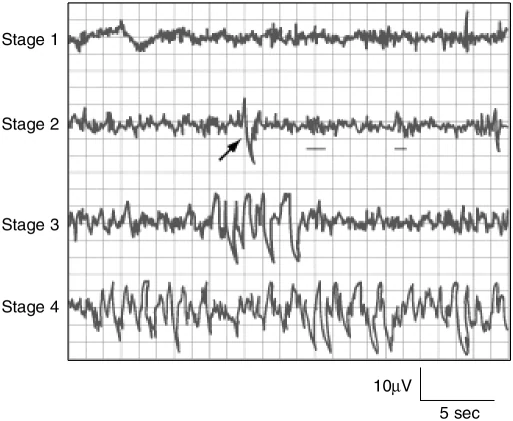
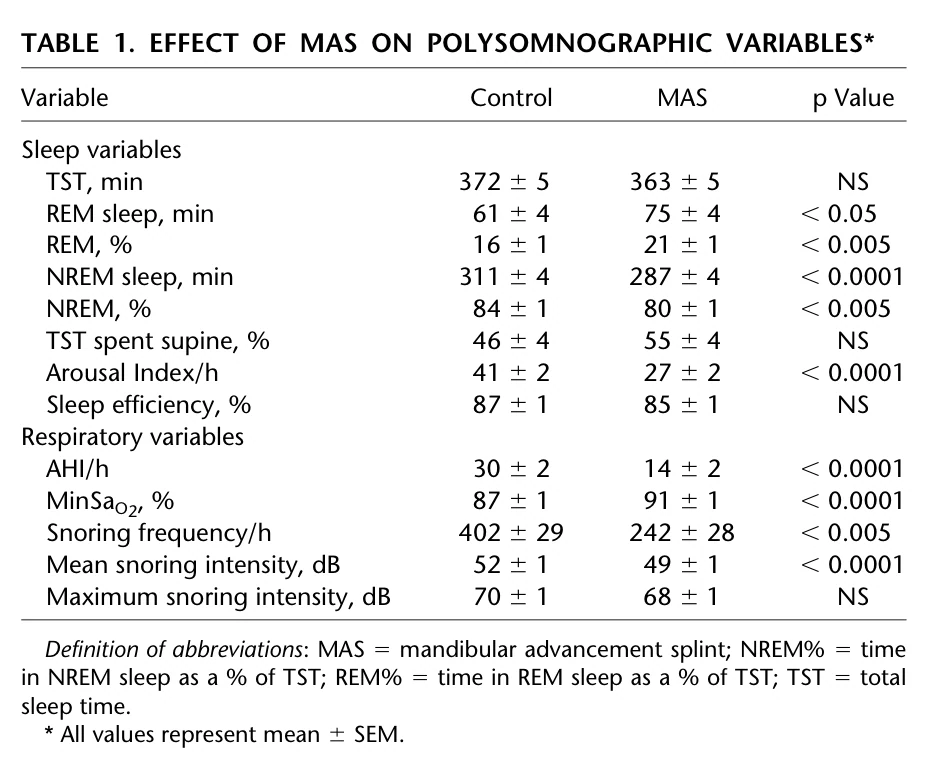
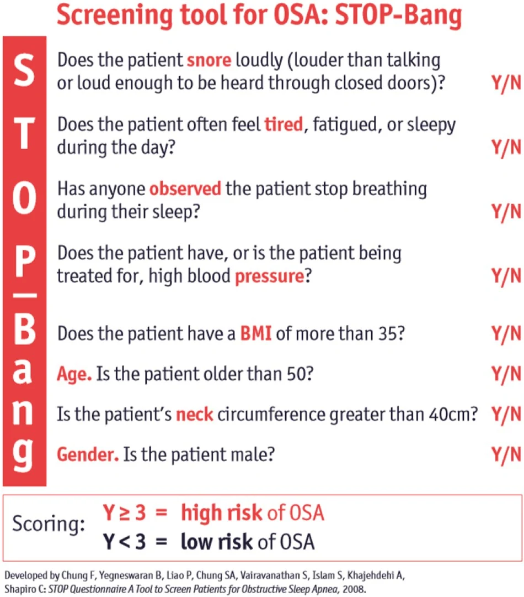
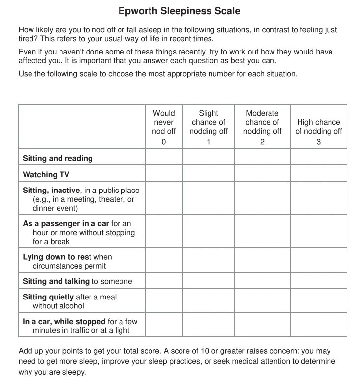
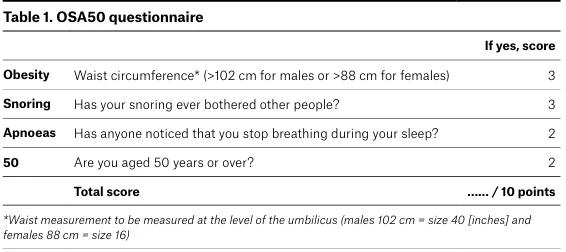
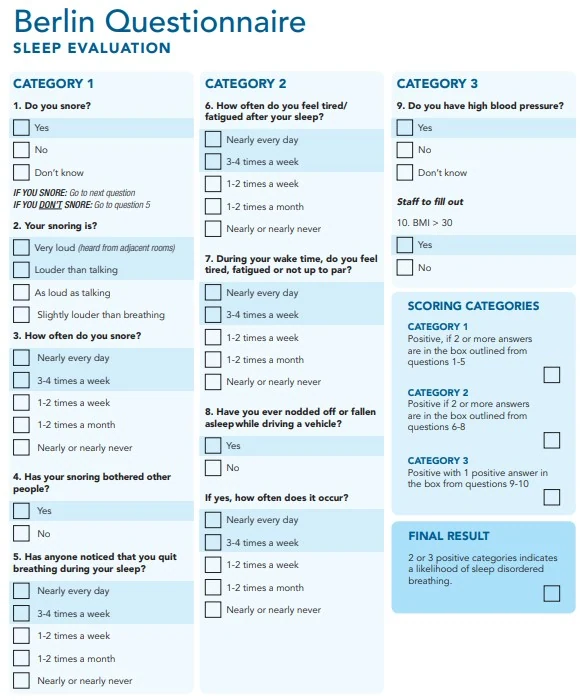
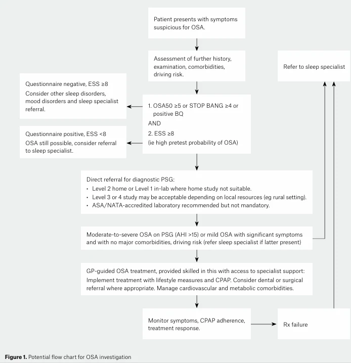
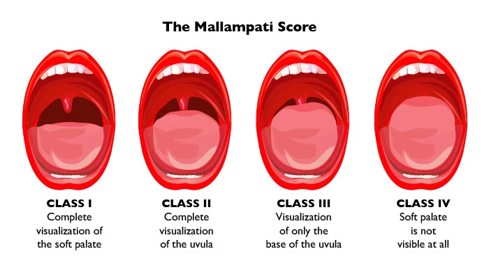

Polysomnography (PSG) records sleep staging as well as respiratory and physiological channels. Total sleep time allows an AHI per hour asleep, while many HSAT systems use monitoring time for an REI.
COMPLETE TEACHING LESSON · 569 WORDS
DEFINITION
Polysomnography— a multi-parametric test, or comprehensive recording, of the biophysiological changes that occur during sleep; used both in the study of sleep and as a diagnostic tool in sleep medicine. Also called a sleep study.
What is recorded, and why
Channel
Sensor
What it establishes
Electroencephalogram (EEG)
Scalp electrodes
Sleep staging; arousals
Electro-oculogram (EOG)
Periorbital electrodes
Eye movements — identifies REM and sleep onset
Electromyogram (EMG)
Submental (chin) and tibial
Muscle tone (REM atonia); leg movements. Masseter EMG for bruxism
EEG + EOG + EMG together determine sleep stage. No sleep staging is possible without them — the fundamental limitation of level 3 and 4 studies
Airflow
Oronasal thermal sensor (apnoea) and nasal pressure transducer (hypopnoea)
Detection and classification of respiratory events. Ideally both sensor types
Respiratory effort
Thoracic and abdominal res-piratory inductance plethysmography (RIP) belts; diaphragm EMG
Distinguishes obstructive from central events; paradoxical movement indicates obstruction
Oxygen saturation
Pulse oximetry (finger probe), high sampling rate, fast averaging
Desaturation events; ODI; minimum SaO2
Electrocardiogram
Chest leads
Rate, rhythm, arrhythmia during events
Body position
Position sensor
Positional dependence — directly relevant to appliance and positional therapy decisions
Snoring
Microphone / sound level meter
Snoring frequency (per hour) and intensity (dB), measured 1 m above the head
End-tidal or transcutaneous CO2
Capnography
Hypoventilation. A standard measurement in paediatric PSG
Video and audio
Infrared camera
Parasomnia, seizure, positional and rotational confirmation
Respiratory inductance plethysmography — how it works
Two elastic bands, one thoracic and one abdominal, each containing a conductor forming a wire loop. As the chest and abdominal circumference change with respiration, the cross-sectional area of the loop changes, altering its inductance. A sensor converts the inductance change into a voltage output reflecting thoracoabdominal volume change. When calibrated against a spirometer or pneumotachograph, RIP can provide quantitative tidal volume and flow data. RIP is the recommended effort sensor for both laboratory PSG and portable monitoring.

Figure 2.1 — EEG characteristics of the NREM stages. Stage 1 shows low-voltage mixed-frequency activity replacing waking alpha; stage 2 shows sleep spindles (underlined) and a K-complex (arrow); stages 3 and 4 (now combined as N3) show progressively more high-voltage slow-wave activity. Calibration: 10 µV, 5 s.
Why it is examinable: you may be shown a trace and asked to identify the stage. The two graphoelements to name confidently are thesleep spindleand theK-complexin N2, and the high-voltage delta of N3.
Normal values
Measure
Normal
Comment
Total sleep time (TST)
Age-dependent
Total time actually asleep
Sleep onset latency (SOL)
<30 min
Lights out to sleep onset
Wake after sleep onset (WASO)
<30 min
Wakefulness after initial sleep onset
Sleep efficiency (SE)
≥85%, often >90% in young adults
TST ÷ time in bed. 75–84% suboptimal; <75% suggests insomnia
REM latency
~90 min
Shortened, with sleep-onset REM, in narcolepsy
Stage distribution
NREM 75–80%, REM 20–25%
NREM dominates the first half, REM the second
Arousal index
Low
Arousals per hour of sleep, scored by the ASDA 3- second rule
AHI
<5/h
Apnoeas + hypopnoeas per hour of sleep
Oxygen desaturation index (ODI)
Low
Desaturations of ≥3% (or ≥4%) per hour
Oxygen saturation
95–100%, stable; ≥90% acceptable
Minimum SaO2 is an independent severity marker
Respiratory rate in sleep
Adults 12–20/min; infants and young children up to 30–60/min
TST spent supine
Reported as %
Needed to judge positional dependence
From the supplied IFDSM Examination Revision Companion, source pp. 27–30. This full content is embedded in the HTML page, not loaded from a PDF or external script.
After reading · linked single best answers
18 SBA questions for §2.1
Read the teaching explanation above first. Each number opens the question and returns here from its explanation.
Adult AHI severity bands are conventionally 5–<15, 15–<30 and >=30 events/hour. Consider event definitions, oxygen burden, sleep stage, position, symptoms and comorbidity rather than treating one cutoff as the whole diagnosis.
COMPLETE TEACHING LESSON · 555 WORDS
EVENT DEFINITIONS — LEARN THE S E VERBATIM
Apnoea— cessation of airflow (≥90% reduction) for ≥10 seconds. Obstructive if respiratory effort continues; central if ef‐ fort is absent; mixed if it begins central and ends obstructive.
Hypopnoea— a reduction in airflow (and/or thoracoabdominal wall movement) of ≥30% of baseline for ≥10 seconds, accompanied by ≥3% oxygen desaturation and/or an arousal. (Historically expressed as a >50% reduction; the AASM- recommended rule is ≥30% with ≥3% desaturation or arousal. The ≥4% desaturation alternative became optional in Scoring Manual version 3 in 2023, although some payers — including Medicare in some jurisdictions — still require 4%.)
Respiratory effort-related arousal (RERA)— increasing respiratory effort or flattening of the nasal pressure waveform leading to an arousal, where the event does not meet apnoea or hypopnoea criteria.
Apnoea–hypopnoea index (AHI)— apnoeas plus hypopnoeas per hour of sleep.
Respiratory disturbance index (RDI)— apnoeas plus hypopnoeas plus RERAs per hour of sleep. Because it includes RERAs, RDI is always ≥ AHI.
Arousal index— the number of arousals per hour of sleep.
DIAGNOSTIC CRITERIAFOROSA
OSA is diagnosed when the number of obstructive events per hour of sleep (apnoeas, hypopnoeas and RERAs — the RDI) on polysomnography is>15 events/hour, or >5 events/hour in a patient who reports any of: unintentional sleep episodes during wakefulness; daytime sleepiness; unrefreshing sleep; fatigue; insomnia; waking with breath-holding, gasping or choking; or a bed partner describing loud snoring, breathing interruptions, or both during sleep.
Severity grading
Severity
Adult AHI (events/hour)
Paediatric AHI (events/hour)
Normal
< 5
< 1
Mild
5 to < 15
1 to < 5
Moderate
15 to < 30
5 to < 10
Severe
≥ 30
≥ 10
The degree of oxygen desaturation during sleep is an independent measure of severity, but it is harder to quantify and there is no universally agreed gradation. An AHI of 15 or above is the level at which risk of insulin resistance, dyslipidaemia, vascular disease and death rises materially — which is why 15 is the threshold for treating asymptomatic disease.
Pathological architecture
Fragmentation: increased arousal index, increased stage shifts, increased N1 and reduced slow-wave and REM sleep — the signature of untreated OSA.
Irregular or absent stages: irregular cycling or missing stages point to specific disorders — for example, a patient with narcolepsy may enter sleep directly into REM (sleep-onset REM period).
Chronic insomnia disorder: increased sleep latency and/or increased WASO (often exceeding 30 minutes) with reduced sleep efficiency relative to age norms; increased N1 and decreased slow-wave sleep; relatively greater EEG power in the high-frequency beta and gamma bands; and a characteristic reverse first-night effect— better sleep on the first laboratory night than the second. Some patients have an entirely normal study. PSG is not indicated inchronic insomnia unless a breathing or movement disorder is suspected, the initial diagnosis is uncertain, treatment has failed, or precipitous arousals occur with violent or injurious behaviour.
Variables reported
Sleep variables
Respiratory variables
• • • • • • Total sleep time (min) REM sleep (min) and REM as % of TST NREM sleep (min) and NREM as % of TST TST spent supine (%) Arousal index (per hour) Sleep efficiency (%)
uration ODI (per hour) Snoring frequency (snores per hour) Mean and maximum snoring intensity (dB) Limb movements; sleep stage distribution
• • • •
From the supplied IFDSM Examination Revision Companion, source pp. 30–31. This full content is embedded in the HTML page, not loaded from a PDF or external script.
After reading · linked single best answers
25 SBA questions for §2.2
Read the teaching explanation above first. Each number opens the question and returns here from its explanation.
The AASM-recommended hypopnoea rule includes >=30% flow reduction for >=10 seconds with >=3% desaturation or arousal; the alternative >=4% rule can yield a different index. Identify which scoring rule was used before comparing studies.
COMPLETE TEACHING LESSON · 395 WORDS
The polysomnogram is the gold standard for objectively assessing OSA severity, and it is requested and reported by a sleep physician. As a dentist you read it to answer five practical questions.
What you look for
What it means for your plan
1. AHI / RDI and severity band
Establishes the baseline against which treatment success will be judged, and shapes ex-pectation. A high AHI (≥30) suggests severe disease often requiring more aggressive treat-ment; both CPAP and oral appliances reduce AHI, but CPAP achieves complete response (AHI <5) more often. Severity is predictive of response to an oral appliance
2. Degree of oxygen desatura-tion and minimum SaO2
CPAP is superior to oral appliances in alleviating desaturation. Significant desaturation in a patient with cardiovascular disease argues for CPAP first, or for combination therapy, and lowers your threshold for insisting on follow-up objective testing
3. Positional dependence (su-pine vs non-supine AHI, % TST supine)
The most actionable single item for a dentist. Supine-dependent disease favours position-al therapy and increases the likelihood of oral appliance success. Note that a patient who spent only 20% of the night supine may have had their disease under-sampled
4. Sleep-stage dependence (REM-related events)
REM-predominant OSA responds relatively poorly to mandibular advancement, because REM atonia defeats the mechanical advantage of protrusion. Warn the patient and plan objective verification
5. Arousal index and architec-ture; other diagnoses
CPAP has shown a greater effect on arousals in some studies. Identification of REM sleep behaviour disorder, periodic limb movements or central events changes the referral pathway — RBD in particular warrants neurological evaluation because of its link to neurodegenerative disease
How findings map onto treatment
CPAP— favoured when AHI is high, desaturation significant, or where an appliance is less likely to control events or improve sleep quality.
Oral appliance therapy— for mild to moderate OSA, or severe OSA where CPAP is refused, not tolerated or ineffective. Positional dependence increases the likelihood of success.
Behavioural therapy— positional therapy where the study shows supine dependence; weight loss where obesity is present.
Surgery— considered for severe disease where CPAP and appliances are not tolerated or effective, particularly where a specific correctable anatomical obstruction exists.
Pharmacotherapy— used for other disorders diagnosed on the study (e.g. RBD) or for residual sleepiness; it is not a primary treatment for OSA itself.
From the supplied IFDSM Examination Revision Companion, source pp. 31–32. This full content is embedded in the HTML page, not loaded from a PDF or external script.
After reading · linked single best answers
9 SBA questions for §2.3
Read the teaching explanation above first. Each number opens the question and returns here from its explanation.
A decrease in AHI does not itself establish satisfactory residual disease control, and an improved ESS does not exclude persistent OSA. The medical sleep provider confirms efficacy with objective follow-up testing.
COMPLETE TEACHING LESSON · 295 WORDS
THE THREERESPONSEC AT EGORIES — AGUARANTEEDEXAMIN AT IONITEM
Category
Definition
Complete response
Resolution of OSA symptoms and treatment AHI < 5/h
Partial response
Improved symptoms and ≥50% reduction in AHI, but AHI remains ≥ 5/h
Treatment failure
Ongoing clinical symptoms, with or without <50% reduction in AHI
Note that some literature defines success more loosely as ≥50% AHI reduction, and reports a separate figure for reduction to AHI <10 ("near-complete response"). If asked, give the three-category scheme above and note that definitions vary between studies — which is precisely why efficacy figures differ so widely between papers.
The signature of a good outcome
Domain
Expected change with effective treatment
Sleep variables
REM sleep increases; NREM decreases. Total sleep time typically does not change — in-stead there is a significant redistribution towards more REM and less NREM (REM re-bound, reflecting recovery of previously suppressed REM). Arousal index decreases
Respiratory variables
AHI reduces; minimum SaO2 increases; snoring frequency and intensity reduce

Figure 2.2 — Effect of a mandibular advancement splint on polysomnographic variables(control versus MAS, with p values). Sleep variables: TST unchanged (372 → 363 min, NS) while REM rises (61 → 75 min, 16% → 21% of TST) and NREM falls; arousal index falls markedly (41 → 27/h). Respiratory variables: AHI 30 → 14/h, minimum SaO 2 87 → 91%, snoring frequency 402 → 242/h, mean snoring
intensity 52 → 49 dB (maximum intensity unchanged).
Why it is examinable: this single table is the empirical proof of the pattern above. The two details worth quoting are thatTST does notchange significantly— the benefit is redistribution, not more sleep — and thatmaximumsnoring intensity is unchanged whilemeanin‐tensity and frequency fall. It also gives you real numbers for the magnitude of effect.
From the supplied IFDSM Examination Revision Companion, source pp. 32–33. This full content is embedded in the HTML page, not loaded from a PDF or external script.
After reading · linked single best answers
9 SBA questions for §2.4
Read the teaching explanation above first. Each number opens the question and returns here from its explanation.
An uncomplicated adult with high pre-test probability may be appropriate for HSAT under a clinical pathway. A negative, inconclusive or technically inadequate HSAT despite suspicion calls for PSG; significant cardiopulmonary disease, chronic opioids, stroke, severe insomnia or suspected hypoventilation favor PSG.
Full PSG: EEG, EOG, EMG, ECG, oximetry, airflow, respiratory effort, body posi-tion, limb movements. Measures sleep stage and quantifies respiratory events accurately
Type 2
Unattended, home (occa-sionally laboratory-ap-plied then home); 10–15 sensors, ≥7 channels
Full PSG montage, but without a technician present
Type 3
Home; 4–7 sensors
Limited channel monitoring of breathing parameters without sleep assessment: airflow (≥2 channels of respiratory movement, or movement and flow), respiratory effort, oximetry, heart rate/ECG
Type 4
Home; 1–2 sensors
One or two bioparameters — typically oximetry ± airflow or heart rate
Type 2 studies show a high level of agreement with in-laboratory PSG for diagnosing OSA, although there is greater potential for signal loss and study failure (~7%, up to 6.6% in some series) because no technician is in attendance. Types 3 and 4 have good ability to confirm OSA in highly selected patients with a high pre-test probability of moderate-to-severe disease and without significant medical or sleep comorbidity. In Australia, MBS reimbursement is not currently available for type 3 and 4 testing, so their use there has remained limited.
Head-to-head comparison
Laboratory-based (type 1)
Home (type 2)
Indications Low probability of moderate-to-severe OSA; patient unsuitable for a type 2 study; failed type 2 study. Also the standard for diagnosing narcolepsy, central sleep apnoea, parasomnias and movement disorders
High probability of moderate-to-severe OSA, in a patient without significant medical comorbidity or other suspected sleep disorder
Contra-indica‐tions / factorsmandating type1
Severe intellectual disability
Patient factors: severe intellectual disability; neuromuscular disease; major communication difficulties; severe physical dis-ability with inadequate carer attendance; unsuitable home en-vironment (noise, family interactions, distance from the laborat-ory, staff safety); seeking a second opinion where the original diagnosis is uncertain; serious medicolegal consequences; results of former testing inconsistent with clinical impression; patient preference. Sleep disorder factors: consideration of central sleep apnoea, hypoventilation, heart failure, neurological disorders, sleep-related movement disorder, parasomnia, seizure dis-order or unexplained hypersomnolence; need for infrared camera or extended EEG montage; transcutaneous CO2 mon-itoring required; video confirmation of body positional or rota-tional aspects, or of associated movements, required
Advantages Most accurate and reliable — the refer-ence standard; low failure rate, includ-ing for SDB other than OSA; measures sleep stage and quantifies respiratory events accurately; expert supervision allows real-time troubleshooting of sensors and immediate intervention to improve comfort
Performed at home in a familiar environment, generally giving more representative sleep; cost-effective and widely available; improves access, including in remote areas; avoids hospital- acquired infection risk
Disadvantages
Laboratory-based (type 1)
Home (type 2)
Expensive, technically demanding and labour-intensive; unfamiliar environment and a strange technician can be stress-ful — particularly for children — impair-ing sleep quality and cooperation; lim-ited accessibility in resource-limited set-tings
Failure rate ~6.6%, especially where the patient is wired up unsupervised or wired in the laboratory and sent home; under-estimates AHI by around 10% because of loss of respiratory effort signals; suitable for OSA diagnosis only in conjunction with a comprehensive sleep evaluation and in patients with well-defined OSA symptoms; limited scope, so insufficient for non-respiratory sleep disorders or complex breathing patterns such as CSA; poor signal quality or lost data may alter or miss important measurements
EXAM TRAP — THE DIRECTIONOF THE ERROR
A home study underestimates the AHI, typically by about 10%, because the denominator is total recording time rather than total sleep time and because effort signals are more often lost. The clinical corollary is the one to state: a positive homestudy can be believed, but a negative home study in a symptomatic patient cannot— it must be followed by in-laborat‐ ory PSG. Candidates frequently get this backwards.
From the supplied IFDSM Examination Revision Companion, source pp. 33–34. This full content is embedded in the HTML page, not loaded from a PDF or external script.
After reading · linked single best answers
19 SBA questions for §2.5
Read the teaching explanation above first. Each number opens the question and returns here from its explanation.
MSLT evaluates pathological sleep propensity and sleep-onset REM periods; MWT evaluates wake-maintenance ability. These tests answer different questions and do not substitute for an OSA diagnostic study.
COMPLETE TEACHING LESSON · 658 WORDS
Multiple Sleep Latency Test (MSLT)
Maintenance of Wakefulness Test (MWT)
Measures The tendency to fall asleep — physiological sleepiness, in the absence of alerting factors
The ability to stay awake
Indications Diagnosis and quantification of physiological sleepiness in narco-lepsy and idiopathic hypersomnia; evaluation of persistent sleepi-ness after treatment; objective confirmation of reported clinical improvement after intervention; assessment of the effects of hypnotic medication
Assessment of the ability to remain awake where sleepiness poses a public or personal safety risk (driving, operat-ing machinery); evaluation of treatment effectiveness. An alternative to the MSLT, especially in very sleepy patients
Method Follows an overnight PSG to confirm adequate prior sleep. Four to five nap opportunities at ~2-hour intervals through the day. In a dark, quiet room the patient lies down and is instructed to try to fall asleep. Each trial is terminated after 20 minutes if no sleep occurs. The clinical version allows each nap to continue to a pre- specified termination point (15 minutes after sleep onset) to permit REM sleep to emerge; the research version terminates as soon as a sleep-onset criterion is met, limiting total sleep ob-tained
The patient sits up in a chair in a quiet, dimly lit room and is instructed to stay awake. Vocalisation and movement are not allowed. Four or five trials, beginning 1.5–3 hours after awakening and repeat-ing every two hours. Each trial ends after 20 minutes (modern protocols use 40 minutes) if no sleep occurs, or imme-diately after sleep onset. Patients must remain awake and occupied between tri-als
Interpretation Mean sleep latency (MSL) — the average latency across naps; shorter latency indicates more severe physiological sleepiness. Also a measure of "sleepability": high sleepability gives an MSL of 6–8 min even after two weeks with time in bed extended to 10 hours; low sleepability gives a long MSL, as in insomnia. ≥2 sleep-onset REM periods (SOREMPs) with an MSL ≤8 min supports narcolepsy — but SOREMPs are also frequent in un-treated OSA. There is a negative correlation between prior night total sleep time and next-day MSL
Mean sleep latency measures how long wakefulness can be maintained; a longer latency indicates greater ability to maintain wakefulness. Considered a more accurate reflection of the ability to function and maintain alertness in com-mon situations of inactivity
Confounders Physiological: age (longest latency in prepubescent children, shorter in young adults; longer at 50 and 80 than in younger adults); prior sleep quantity and quality (MSL falls after deprivation, disruption or fragmenta-tion). Drugs: MSL falls after barbiturates and hypnotics, rises after stimulants. Circadian: for shift workers and late sleepers the timing of testing matters, as circadian phase affects latencies and the occurrence of SOREMPs. Psychological: anxiety and stress increase MSL; depression may shorten it; anticipation of going home lengthens latency; increased CNS arousal (psychophysiological insomnia) lengthens latency.
Multiple Sleep Latency Test (MSLT)
Maintenance of Wakefulness Test (MWT)
Protocol: a floor effect on the MSLT and a ceiling effect on the MWT; a five-nap protocol gives a longer latency (last-nap effect).
Limitations MSL should not be the sole criterion for determining sleepiness or for certifying a diagnosis or treatment response. It discriminates poorly between patients with sleep disorders and the normal population, with a large standard deviation and floor and ceiling effects — although it does show appropriate change from initial to subsequent testing after treatment. Neither test perfectly predicts real-world alertness or driving performance; clinical judgement alongside the result is essential for safety decisions. Normative data are limited, especially for children and shift workers
HIGH-YIELD — ONESENTENCETH AT CAPTURES THE PA I R
"The MSLT asks the patient to try to sleep and measures how quickly they do; the MWT asks them to try to stay awake and measures how long they last. The first is used to diagnose hypersomnolence, the second to make safety and fitness-to-drive judgements."
From the supplied IFDSM Examination Revision Companion, source pp. 34–35. This full content is embedded in the HTML page, not loaded from a PDF or external script.
After reading · linked single best answers
12 SBA questions for §2.6
Read the teaching explanation above first. Each number opens the question and returns here from its explanation.
ESS measures sleep propensity; STOP-BANG and related tools estimate risk. They direct referral or testing but neither grade disease severity reliably nor provide a definitive diagnosis.
COMPLETE TEACHING LESSON · 2,848 WORDS
THE DENTIST ' SROLE , S TAT EDPRECISE LY
The dentist's role is to screen for symptoms and signs of OSA and then refer to a sleep physician for clinical review and diagnostic testing. Dentists are not authorised to diagnose sleep-related breathing disorders. Since 2017 the American Dental Association has held that all dentists should screen patients for sleep-related breathing disorders — screening is not an optional sub-speciality activity.
Understanding what a screening test does
Sensitivity is the proportion of subjects with OSA who have a positive questionnaire. For a highly sensitive test, a negative result is good at ruling out disease.
Specificity is the proportion of subjects without OSA who have a negative questionnaire. For a highly specific test, a positive result is good at ruling in disease.
In general, OSA screening questionnaires have good but not optimal sensitivity and poor specificity for detecting AHI ≥15 events/hour — producing a large number of false positives. They are screening tools, not diagnostic ones, and predictive value improves with increasing OSA severity.
EXAM TRAP — N E G AT IVEQUESTIONNAIRESDONOTEXCLUDEOSA
A negative questionnaire — particularly the ESS— does not rule out clinically significant OSA. These patients still need specialist referral if clinical suspicion is present. The ESS correlates poorly with AHI, because not all patients with OSA experience detectable sleepiness and because excessive daytime sleepiness has many other causes (other sleep disorders, depression, insufficient sleep, medication). The ESS should never be used alone to identify patients at high risk of OSA. Used in conjunction with another questionnaire, however, it helps identify patients with high risk of symptomatic disease who will benefit from treatment.
The questionnaires
Tool
Structure
Threshold and performance
Epworth Sleepiness Scale
8 items, each 0–3; total 0–24
>10 indicates increased daytime sleepiness. Measures the propensity for dozing in eight everyday situations. Higher score = greater sleepiness, not greater OSA severity
STOP-BANG
8 items: Snoring, Tiredness, Observed
≥3 indicates increased risk; higher scores correlate with greater risk. High sensitivity for moderate-to-severe OSA, making it a reliable initial screen.
Tool
Structure
Threshold and performance
apnoea, Pressure (hy-pertension), BMI >35, Age >50, Neck >40 cm, Gender male — four yes/no questions and four clinical attrib-utes
Using a higher cut-off reduces sensitivity but increases specificity. Widely used and reliable
OSA50
4 items, /10: waist cir-cumference (>102 cm male, >88 cm female) 3, snoring 3, witnessed apnoeas 2, age ≥50 y 2
≥5 points. In a validation sample: 94% sensitivity, 31% specificity for moderate-to-severe OSA — the classic illustration of "sensitive but not specific"
Berlin Questionnaire
11 items in 3 categor-ies: snoring severity; daytime sleepiness; hypertension or obesity
High risk = positive in ≥2 categories. Developed by respiratory and primary care physicians
NoSAS
Neck >40 cm 4; BMI ≥30 5; snoring 2; age >55 y 4; male 2
≥8 suggests a high probability of significant SDB
Paediatric Sleep Ques‐tionnaire
22 items in 4 sub‐ scales: breathing, be‐ haviour, sleepiness, other
>0.33 (i.e. more than a third answered positively) suggests high likelihood of SDB. Not diagnostic, but the most sensitive paediatric questionnaire available (Topic 8)

Figure 2.3 — The STOP-BANG questionnaire(Chung et al. 2008). Y ≥3 = high risk of OSA; Y <3 = low risk.
Why it is examinable: you should be able to recite the eight items from the acronym without prompting. It is the most likely single tool youwill be asked to name, describe and score.

Figure 2.4 — The Epworth Sleepiness Scale. Eight situations rated 0 (would never doze) to 3 (high chance of dozing); a total of ≥10 raises concern.
Why it is examinable: note the framing on the form — "how likely are you to doze off or fall asleep, in contrast to feeling just tired".Candidates who explain that the ESS measures sleep propensity rather than fatigue, and that it therefore correlates poorly with AHI,demonstrate real understanding.

Figure 2.5 — The OSA50 questionnaire. Obesity by waist circumference (>102 cm male, >88 cm female) 3 points; snoring that has bothered other people 3; witnessed apnoeas 2; age ≥50 years 2. Total /10.
Why it is examinable: the four highest-yield predictors of severe OSA distilled into one page, and the source of the 94%/31% sensitivity–specificity pair worth quoting.

Figure 2.6 — The Berlin Questionnaire, showing its three scoring categories (snoring behaviour; daytime sleepiness and drowsy driving; hypertension and BMI >30) and the final result rule: two or more positive categories indicates a likelihood of sleep-disordered breathing.

Figure 2.7 — A potential flow chart for OSA investigation, from presentation with suspicious symptoms through history, examination, comorbidities and driving risk, to questionnaire-based triage and the choice between direct diagnostic sleep study and specialist referral, and then to monitoring of symptoms, CPAP adherence and treatment response.
Why it is examinable: this is theAustralian Medicare pathway. Two routes exist: (i) the GP refers to a sleep or respiratory physician whothen orders testing as appropriate; or (ii) the GP orders a sleep study directly, without prior specialist review, if criteria are met — a posit‐ive screening questionnaire (Berlin positive, OSA50 ≥5, or STOP-BANG ≥4)in addition toan ESS ≥8. The intent is to expedite diagnosisin a highly symptomatic group; the caveat you must state is thatmany patients with significant OSA will not meet this questionnairecombination. Remember also that levels 3 and 4 are screening tests, not diagnostic ones. These administrative thresholds arejurisdiction-specific.
The dental physical examination as screening
Medical and dental history taking should record the patient's height, weight and neck circumference as part of OSA screening, and evaluate the history for known SDB risk factors — obesity, hypertension, type 2 diabetes, cardiovascular disease and family history of sleep apnoea. Lifestyle factors including smoking, alcohol use and medications affecting muscle tone should be reviewed. Key referral triggers are increased BMI, witnessed apnoeas, excessive daytime sleepiness and the presence of medical comorbidity.
Finding
Significance
Neck circumference
>43 cm (17 in) in men and >40 cm (16 in) in women is strongly associated with higher OSA risk. Document central obesity and elevated BMI — increased adipose tissue around the airway contributes to collapse
Finding
Significance
Retrognathia / micrognathia
Reduces airway space. A steep mandibular plane angle is linked to heightened OSA risk; lower pharyngeal changes include elongated pharyngeal structures and a narrowed posterior airway space, often with an inferiorly positioned hyoid
Macroglossia
Tongue scalloping (crenations) along the lateral borders suggests the tongue is too wide for the dental arch, contributing to oropharyngeal crowding. Macroglossia is often associated with an inferior-posterior hyoid position, placing tongue muscles at a mechanical disadvantage. Digital morphometric studies correlate increased tongue width and thickness with higher AHI
High palatal vault / narrow arch
Maxillary constriction with a high vault reduces oral cavity space; may present as a narrow, tapered V-shaped maxillary arch with posterior crossbites or compensatory mandibular constriction. Frequently associated with chronic mouth breathing
Large mandibular tori
Frequently observed in OSA; a large bony mass reduces oral volume, displacing the tongue and contributing to obstruction
Pharyngeal crowding
Enlarged uvula, elongated soft palate, excessive oropharyngeal soft tissue. A high Mallampati score indicates a longer uvula and soft palate. An enlarged uvula — typically longer than 15 mm and wider than 10 mm — has been directly linked to SDB
Mouth breathing
Often with dry mouth; a compensatory mechanism for nasal obstruction, associated with SDB
Bruxism
Commonly noted in patients with disrupted sleep and airway issues (see Topic 4 for the causation caveat)
Dental erosion
May indicate GORD, which frequently coexists with SDB
Modified Mallampati classification is used to describe the patency of the oral airway. To perform it correctly, ask the patient to sit upright, open the mouth widely, and protrude the tongue maximally without phonation(this last point dis‐ tinguishes the modified Mallampati from the original anaesthetic Mallampati score).

Figure 2.8 — The modified Mallampati classification. Class I: soft palate, uvula, fauces and pillars fully visible. Class II: soft palate and the majority of the uvula visible. Class III: only the soft palate and the base of the uvula visible. Class IV: only the hard palate visible.
Why it is examinable: classesIII and IVare the "at-risk anatomically" findings that belong in your targeted documentation. Be able to statethe technique (upright, maximal tongue protrusion, no phonation) as well as the four classes.
NUMBERS TO MEMORISE — TO P I C 2
Apnoea ≥90% flow reduction ≥10 s · hypopnoea ≥30% reduction ≥10 s with ≥3% desaturation or arousal · SaO 2≥90%
normal
OSA diagnosis: RDI >15/h, or >5/h with symptoms. AHI ≥15 → material increase in metabolic and vascular risk
Adult 5 / 15 / 30 · paediatric 1 / 5 / 10
Sleep efficiency ≥85% normal; SOL and WASO <30 min; REM latency ~90 min
Type 2 study failure rate ~6.6–7%; home study underestimates AHI by ~10%
Type 1 = 15–20 sensors · type 2 = 10–15 · type 3 = 4–7 · type 4 = 1–2
MSLT: MSL ≤8 min with ≥2 SOREMPs supports narcolepsy; high sleepability MSL 6–8 min; trials terminated at 20 min
OSA50: 94% sensitivity, 31% specificity for moderate–severe OSA
Australian direct-referral pathway: positive questionnaire (Berlin positive / OSA50 ≥5 / STOP-BANG ≥4) plus ESS ≥8
Neck circumference >43 cm male, >40 cm female; uvula >15 mm long and >10 mm wide linked to SDB
Effective treatment: REM ↑, NREM ↓, TST unchanged, arousal index ↓, AHI ↓, min SaO 2↑, snoring frequency and
mean intensity ↓
SELF-TEST — TOPIC 2
1. Define apnoea, hypopnoea, AHI and RDI. Which is always larger and why?
Apnoea: ≥90% airflow reduction for ≥10 s (obstructive if effort persists, central if absent). Hypopnoea: ≥30% airflow reduction for ≥10 s with ≥3% desaturation and/or an arousal. AHI: apnoeas plus hypopnoeas per hour of sleep. RDI: apnoeas plus hypopnoeas plus RERAs per hour of sleep. RDI is always ≥ AHI because it additionally counts respiratory effort-related arousals, which by definition do not meet apnoea or hypopnoea criteria.
2. A patient brings a home sleep study reporting AHI 4/h. They snore loudly, have witnessed apnoeas and anESS of 15. What do you do?
Do not accept the negative result. A home (type 2) study underestimates AHI by approximately 10%, has a failure rate of around 7%, and uses total recording time rather than total sleep time as its denominator. In a highly symptomatic patient a negative home study is not reassuring: refer back to the sleep physician for in-laboratory type 1 polysomnography. I would not commence oral appliance therapy on the basis of this study, because there is no confirmed diagnosis and no reliable baseline against which to judge efficacy.
3. You are shown a polysomnogram. Which five items change your dental treatment plan?
(i) AHI/RDI and severity band — sets expectations and the efficacy baseline; (ii) minimum SaO 2 and degree of desaturation
— significant desaturation with cardiovascular comorbidity argues for CPAP or combination therapy; (iii) positional data (supine versus non-supine AHI, percentage of the night supine) — supine dependence favours appliance success and positional therapy; (iv) sleep-stage dependence — REM-predominant disease responds relatively poorly to mandibular advancement; (v) architecture, arousal index and any other diagnoses — RBD, periodic limb movements or predominantly central events change the referral pathway rather than the appliance.
4. What does a successfully treated polysomnogram look like? Give the direction of change for six variables.
REM sleep increases and NREM decreases, with total sleep time essentially unchanged — that is, redistribution rather than more sleep (REM rebound). Arousal index falls. AHI falls, minimum SaO 2 rises, and snoring frequency and mean intensity
fall. In the published MAS data: AHI 30 → 14/h, minimum SaO 2 87 → 91%, arousal index 41 → 27/h, REM 16% → 21% of
TST, snoring frequency 402 → 242/h, while TST (372 → 363 min) and maximum snoring intensity were unchanged.
5. Distinguish sensitivity from specificity in the context of OSA screening, and explain the practical con‐sequence.
Sensitivity is the proportion of people with OSA who screen positive; for a highly sensitive test a negative result is good at ruling disease out. Specificity is the proportion of people without OSA who screen negative; for a highly specific test a positive result is good at ruling disease in. OSA screening questionnaires have good but suboptimal sensitivity and poor spe‐cificity for AHI ≥15, so they generate many false positives — acceptable for a screening instrument whose purpose is to trigger referral, but the reason they can never be used to diagnose. The corollary is that a positive screen mandates referral, while a negative screen in a clinically suspicious patient does not permit reassurance.
6. Contrast the MSLT and MWT in one sentence each, and give the narcolepsy criterion.
The MSLT measures the tendency to fall asleep — the patient is asked to try to sleep during four to five nap opportunities at two-hourly intervals after an overnight PSG, and mean sleep latency is calculated. The MWT measures the ability to stay awake — the patient sits in a chair in a quiet dim room and is instructed to remain awake over four to five trials. A mean sleep latency of ≤8 minutes with two or more sleep-onset REM periods supports narcolepsy, but SOREMPs also occur frequently in untreated OSA, so the test is not specific.
7. Describe how to perform the modified Mallampati assessment and state which classes concern you.
Seat the patient upright, ask them to open the mouth widely and protrude the tongue maximally without phonation. Class I: soft palate, uvula, fauces and pillars fully visible; II: soft palate and most of the uvula; III: soft palate and base of uvula only; IV: hard palate only. Classes III and IV indicate a crowded oropharynx with a longer uvula and soft palate and belong in the "at risk anatomically" documentation, alongside tonsil grade 3–4, retrognathia, deep palatal vault, macroglossia with scalloping, thick neck and a low hyoid.
REFERENCES — TO P I C 2
Berry RB, Quan SF, Abreu AR, et al. The AASM Manual for the Scoring of Sleep and Associated Events. Version 3. American Academy of Sleep Medicine; 2023.
American Academy of Sleep Medicine. Summary of updates in version 3 of the AASM scoring manual. AASM; February 2023.
Kapur VK, Auckley DH, Chowdhuri S, et al. Clinical practice guideline for diagnostic testing for adult obstructive sleep apnea: an American Academy of Sleep Medicine clinical practice guideline. J Clin Sleep Med. 2017;13(3):479–504.
Collop NA, Anderson WM, Boehlecke B, et al. Clinical guidelines for the use of unattended portable monitors in the diagnosis of obstructive sleep apnea in adult patients. J Clin Sleep Med. 2007;3(7):737–747.
American Academy of Sleep Medicine. International Classification of Sleep Disorders. 3rd ed, Text Revision. AASM; 2023.
Littner MR, Kushida C, Wise M, et al. Practice parameters for clinical use of the multiple sleep latency test and the maintenance of wakefulness test. Sleep. 2005;28(1):113–121.
Carskadon MA, Dement WC, Mitler MM, Roth T, Westbrook PR, Keenan S. Guidelines for the multiple sleep latency test (MSLT): a standard measure of sleepiness. Sleep. 1986;9(4):519–524.
Johns MW. A new method for measuring daytime sleepiness: the Epworth Sleepiness Scale. Sleep. 1991;14(6):540–545.
Chung F, Yegneswaran B, Liao P, et al. STOP questionnaire: a tool to screen patients for obstructive sleep apnea. Anesthesiology. 2008;108(5): 812–821.
Chai-Coetzer CL, Antic NA, Rowland LS, et al. A simplified model of screening questionnaire and home monitoring for obstructive sleep apnoea in primary care. Thorax. 2011;66(3):213–219.
Netzer NC, Stoohs RA, Netzer CM, Clark K, Strohl KP. Using the Berlin Questionnaire to identify patients at risk for the sleep apnea syndrome. Ann Intern Med. 1999;131(7):485–491.
Marti-Soler H, Hirotsu C, Marques-Vidal P, et al. The NoSAS score for screening of sleep-disordered breathing: a derivation and validation study. Lancet Respir Med. 2016;4(9):742–748.
Nixon GM, Brouillette RT. Diagnostic techniques for obstructive sleep apnoea: is polysomnography necessary? Paediatr Respir Rev. 2002;3(1):18–24.
McNicholas WT. Diagnosis of obstructive sleep apnea in adults. Proc Am Thorac Soc. 2008;5(2):154–160.
Australian Government Department of Health. Medicare Benefits Schedule — items 12203, 12204 and 12250; explanatory notes on sleep studies.
Levine M, Cantwell MK, Postol K, Schwartz DB. Dental sleep medicine standards for screening, treatment and management of sleep-related breathing disorders in adults using oral appliance therapy: an update. J Dent Sleep Med. 2025;12(2).
American Dental Association. Policy statement: the role of dentistry in the treatment of sleep-related breathing disorders. ADA; 2017.
Friedman M, Ibrahim H, Bass L. Clinical staging for sleep-disordered breathing. Otolaryngol Head Neck Surg. 2002;127(1):13–21.
From the supplied IFDSM Examination Revision Companion, source pp. 35–43. This full content is embedded in the HTML page, not loaded from a PDF or external script.
After reading · linked single best answers
23 SBA questions for §2.7
Read the teaching explanation above first. Each number opens the question and returns here from its explanation.